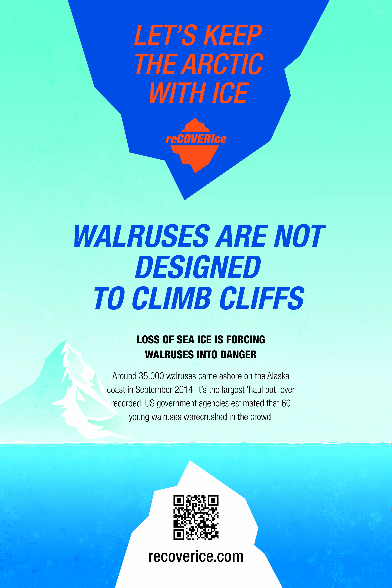
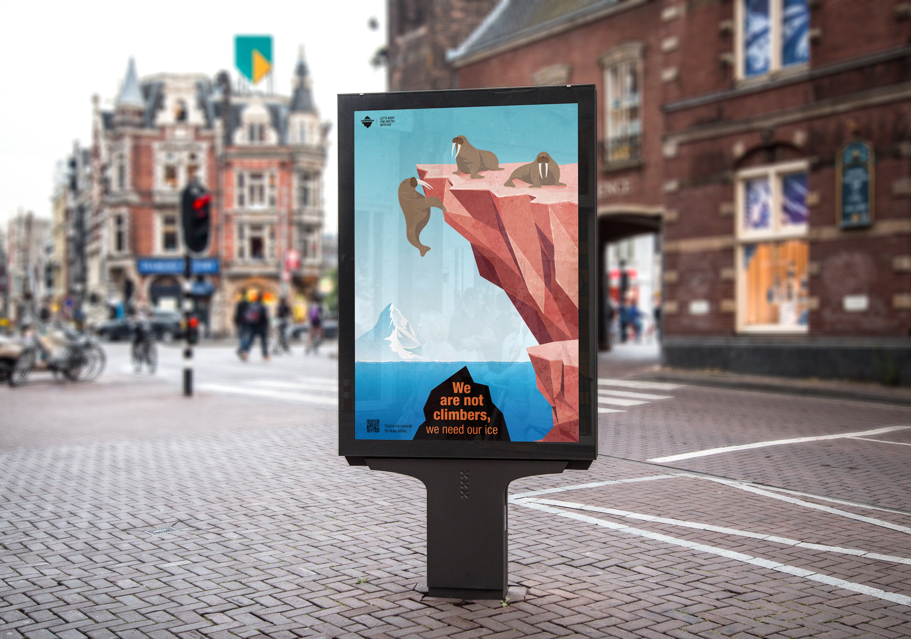

Advertisement
Cultural Event Poster _ Egyptian Opera Festival
The cultural event is an opera and the location is Egypt. Substitution, which is one of the various design principles and methods of techniques is the main concept. It shows one element within the image to introduce the second idea.
Abobe Photoshop / Abobe Illustrator / Abobe Indesign

Soical Good Campagin _ reCoverice
This is my personal logo. The word mark is the first letter of my English name and is made with dots and lines.
Abobe Photoshop / Abobe Illustrator / Abobe Indesign


